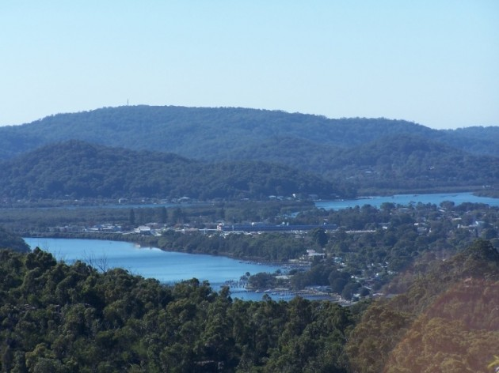

There have been reports are far back as the ancient art of the Dharuk tribal Aborigines of NSW of a mysterious water monster. Legend calls them “Mirreeulla” or giant water serpent. There have also been sightings of this creature in the last decade. A popular story regarding this creature came to light in 1980’s. There was a report by fisherman in a small aluminium boat that a sea creature surfaced below their boat, catapulting their vessel out of the water and through the air over 3 metres. Other reports included boats found adrift with their occupants no where to be found and boats found smashed or overturned.
It is depicted as having a snake-like head, long neck, large body, two sets of flippers with an eel-like tail. This description is very similar to the plesiosaur, which is believed to be the same creature commonly known as The Loch Ness Monster – or Nessie. There have been reports of strange slide marks, similar to that of a crocodile along the banks of the river.
The monster was first heard of by settlers in the 1800s, although there is Aboriginal rock art over 3-4000 years old in the area that describes the creature. The settlers were told stories by the Aboriginals of woman and children being attacked by the moolyewonk or mirreeular, both of them Aboriginal names for the monster that lurks in the river.